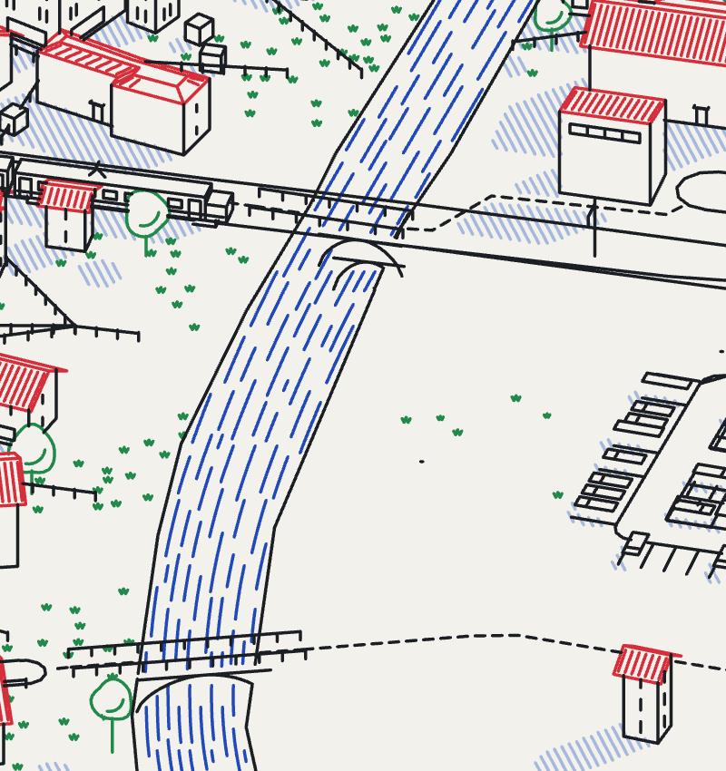
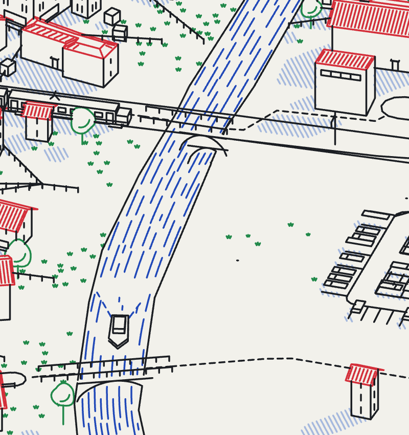

Original review · 15 November 2026
The previous selector could put an 85–110 metre barge on a river only a little over 32 metres wide. Checking the hull alone also admitted vessels into local widenings without checking the approach.
Barges require a measured width of at least 90 metres and a run of at least 400 metres. Tour boats require at least 24 metres of width and over 100 metres of run. Narrower eligible rivers use small motorboats. Existing sea and lake vessel families remain available.
Vessels at least 40 metres long need a clear corridor extending 1.5 vessel lengths ahead and behind the centre, with half-width at least three beams or 45% of vessel length. Smaller vessels also receive an approach check, with tighter clearance. Samples at intervals of at most five metres reject constrictions, banks and islands. A rejected large candidate can fall back to a smaller boat, which must pass its own hull and approach checks.


In the separate 1:4000 recorded Emmental golden, the existing ship is removed. Its cleared water hatching and previously occluded bridge/railing strokes return. This is why the change includes small water and bridge differences as well as boat strokes.
Named LOD comparisons cover Emmental, Amsterdam and Hallstatt at 1:1000 and 1:2000. Estimated plotting time and waste remain essentially unchanged. Reviewed the changed Emmental golden, river comparison crops and LOD close-ups. Eleven goldens remain unchanged; Emmental changes only in ships, water and the adjacent bridge/railings. Tests cover narrow versus broad rivers, short wide basins, sustained channel width, an island in the approach and rotated channels. Build and all 610 tests pass.
Before LOD report · After LOD report (local generated files).
There is no reliable depth data in the input. Width and continuity are conservative artistic proxies, not proof of navigability. The straight corridor can reject a real navigable bend, and small obstacles between samples can be missed. No physical print or exhaustive ocean, estuary and harbour review was made. Mapped ferries and small moored or sailing boats keep their existing placement rules.